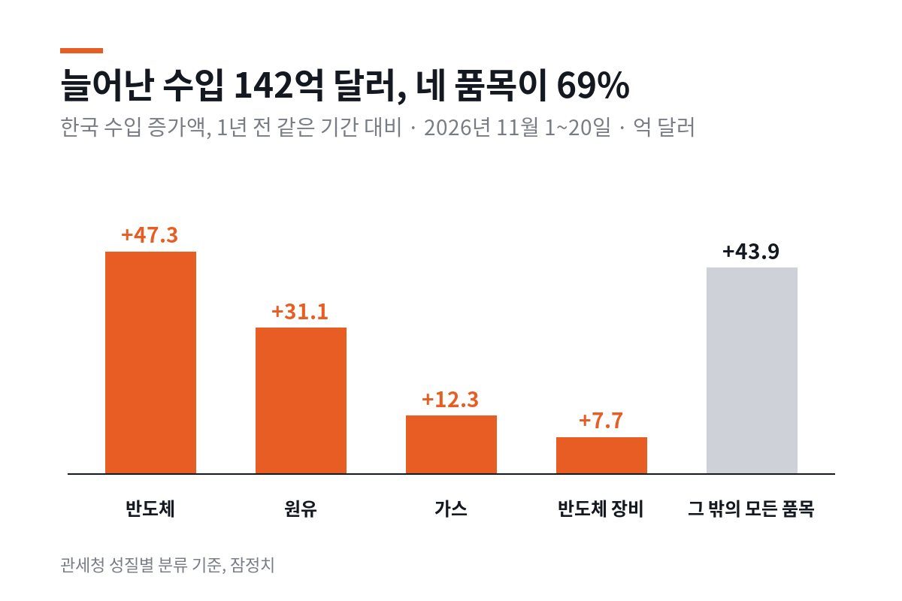
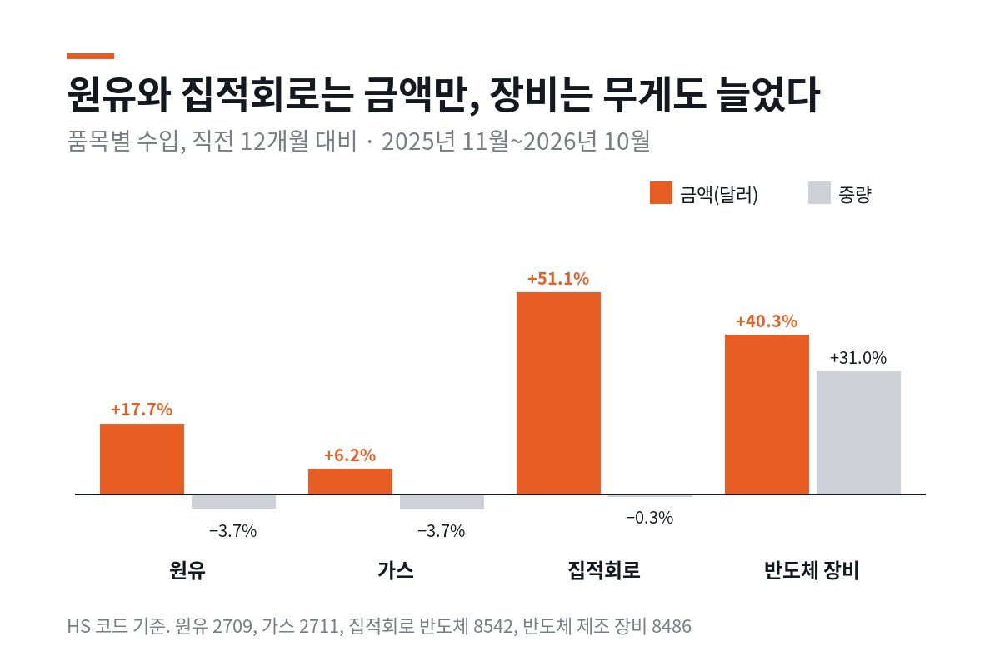

11월 20일까지 수입 39% 증가, 한국은 뭘 더 샀나
관세청 잠정치로 11월 1~20일 수입은 503억 달러, 1년 전 같은 기간보다 142억 달러 많았어요. 늘어난 금액의 69%는 반도체, 원유, 가스, 반도체 장비 네 품목이었어요. 이 넷을 빼면 수입은 17.6% 늘었어요.

늘어난 142억 달러 가운데 98억 달러
관세청이 11월 23일 발표한 잠정치에서 11월 1~20일 수입은 503억 달러로 1년 전 같은 기간보다 39.4% 늘었어요. 금액으로는 142억 달러예요. 올해는 조업일수가 16일로 지난해 15.5일보다 반나절 많았고, 하루 평균으로 보면 증가율은 35.1%예요. 수출이 두 배가 된 내용은 오전 1차 해설에서 다뤘고, 여기서는 수입만 봐요.
늘어난 금액을 품목별로 나누면 반도체가 47억 달러, 원유가 31억 달러, 가스가 12억 달러, 반도체 제조 장비가 8억 달러예요. 네 품목을 합하면 98억 달러로 증가분의 69%를 차지해요. 이 20일 동안 전체 수입에서 넷이 차지한 몫은 41.8%로, 1년 전 같은 기간의 31.0%보다 커졌어요.
네 품목을 뺀 나머지 수입은 293억 달러로 17.6% 늘었어요. 품목별로는 승용차 33.0%, 기계류 13.8%, 정밀기기 13.1% 증가였고 무선통신기기는 22.0% 줄었어요. 이 나머지에는 석유제품과 석탄도 들어 있는데 각각 40.9%, 31.8% 늘었어요. 품목 이름은 관세청 분류 기준이에요.
원유, 10월엔 덜 들여오고 더 비싸게 샀다

원유 수입액은 11월 1~20일에 83.4% 늘었어요. 20일치 잠정치에는 물량이 나오지 않아요. 가장 가까운 한 달치는 10월이에요. 산업통상부는 11월 1일 낸 10월 수출입동향에서 10월 원유 수입 물량은 6.3% 줄었는데 단가가 62.0% 올라 수입액이 51.9% 늘었다고 설명했어요. 두바이유는 지난해 10월 배럴당 65.00달러에서 올해 10월 110.73달러로 70.4% 올랐고, 산업통상부는 중동 지역의 공급 불확실성으로 유가가 높은 수준을 유지했다고 적었어요.
관세청 품목별 통계로 2025년 11월부터 2026년 10월까지 12개월을 직전 12개월과 견주면 원유 수입은 무게가 3.7% 줄고 금액은 17.7% 늘었어요. 1톤에 치른 값은 약 560달러에서 685달러로 올랐어요.
들여오는 곳도 달라졌어요. 같은 12개월 동안 무게로 보면 사우디아라비아산은 15.6%, 쿠웨이트산은 27.2%, 카타르산은 51.0% 줄었어요. 아랍에미리트산은 4.5% 늘었어요. 미국산은 21.0% 늘어 전체 원유 무게에서 차지하는 몫이 14.9%에서 18.7%가 됐어요. 액화천연가스와 액화석유가스를 합친 가스도 비슷해요. 전체 무게가 3.7% 줄었고 금액은 6.2% 늘었어요. 카타르산은 무게가 56.8% 줄었고 미국산은 14.2% 늘었고, 캐나다산은 76만 톤에서 385만 톤으로 늘었어요. 다만 11월 1~20일만 보면 사우디아라비아에서 들여온 전체 수입액이 148.7% 늘었어요. 20일치 통계는 나라별 품목을 나누지 않아서, 물량이 돌아온 것인지 값 때문인지는 알 수 없어요.
반도체, 같은 무게에 금액은 1.5배
한국은 반도체를 가장 많이 파는 나라 가운데 하나지만 많이 사기도 해요. 관세청 분류로 11월 1~20일 반도체 수입은 93억 달러로 103.4% 늘었어요.
품목별 통계에서 집적회로만 보면 최근 12개월 수입액은 930억 달러로 51.1% 늘었는데 무게는 0.3% 줄었어요. 거의 같은 무게에 1.5배의 금액을 치른 셈이에요. 들여온 곳은 중국이 40.7%, 대만이 35.4%였어요. 중국에서 온 메모리 반도체는 무게가 17.1% 줄었는데 금액은 334억 달러로 118.6% 늘었어요. 반도체는 무게로 양을 재기 어려운 품목이고, 같은 제품의 값이 오른 것인지 더 비싼 제품으로 바뀐 것인지도 통계가 가려 주지 않아요.
반도체 제조 장비는 사정이 달라요. 12개월 수입액이 308억 달러로 40.3% 늘었고 무게도 31.0% 늘었어요. 값만 오른 것이 아니고 들어온 장비의 무게도 늘었어요. 네덜란드산이 38.9%로 가장 많고 일본산 21.3%, 미국산 14.7% 순이에요. 네덜란드산은 금액이 54.2% 늘었어요. 산업통상부 집계로 10월 한 달 반도체 장비 수입은 25억 2,000만 달러, 49.2% 증가였고 11월 1~20일에도 48.6% 늘었어요.
한국에 파는 쪽이 읽을 숫자
한국에 소비재나 일반 기계를 파는 쪽이라면 39.4%보다 17.6%가 자기 시장에 가까운 숫자예요. 그것도 금액이라 값이 오른 몫이 섞여 있어요. 12개월 품목별 통계에서 네 품목을 빼면 수입은 금액이 13.5%, 무게가 1.2% 늘었어요. 20일치와는 기간도 분류도 달라 그대로 견줄 수는 없어요.
나라별로 보면 11월 1~20일에 미국에서 들여온 금액이 45.2%, 대만 81.5%, 중국 52.5%, 일본 27.0%, 유럽연합 17.0% 늘었고 호주는 0.8% 줄었어요. 20일치 통계에는 나라별 품목이 나오지 않아요. 12개월 통계로는 미국산 원유 수입액이 44.3%, 미국산 가스가 43.4% 늘었어요.
반도체 장비를 파는 쪽에는 10월까지 12개월 동안 무게가 31.0% 늘었다는 점이 중요해요. 원유와 가스를 파는 쪽은 같은 기간 한국이 사는 양이 3.7%씩 줄었고 사 오는 곳이 바뀌었다는 점을 봐야 해요.
남은 발표
이번 숫자는 20일치 잠정치예요. 관세청은 연간 통계가 확정되는 2027년 2월까지 일부 수치가 정정될 수 있다고 밝혔어요. 11월 한 달 수출입은 산업통상부가 12월 1일 발표하고, 여기에 원유 수입 물량과 단가, 에너지와 에너지 외 수입이 따로 나와요. 12월 1~10일 잠정치는 12월 11일에 나와요.
숫자로 더 보기
관세청 자료로 매달 1일, 11일, 21일에 새로 고쳐요.